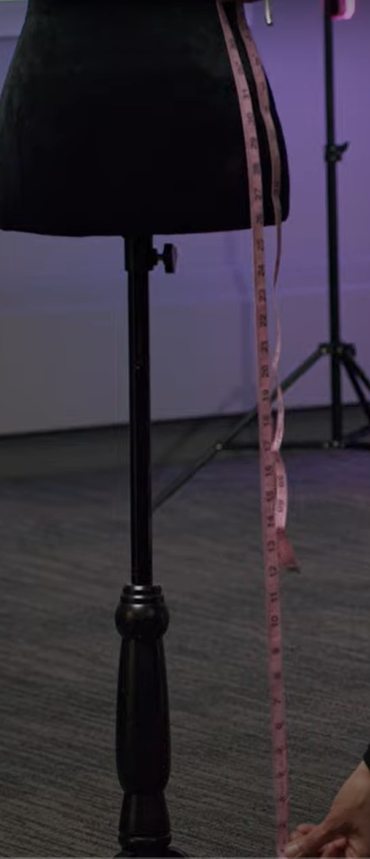
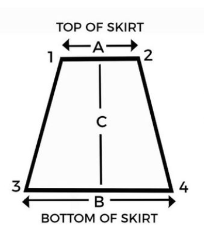
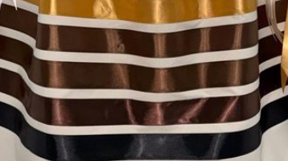
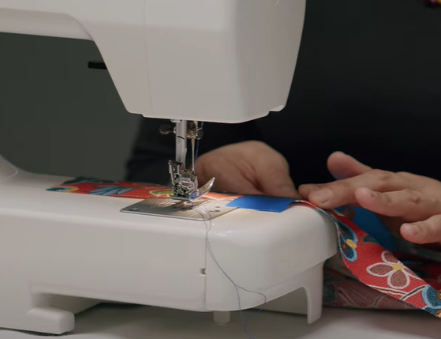
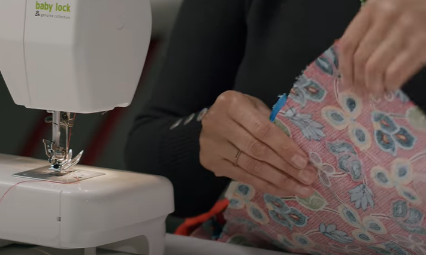
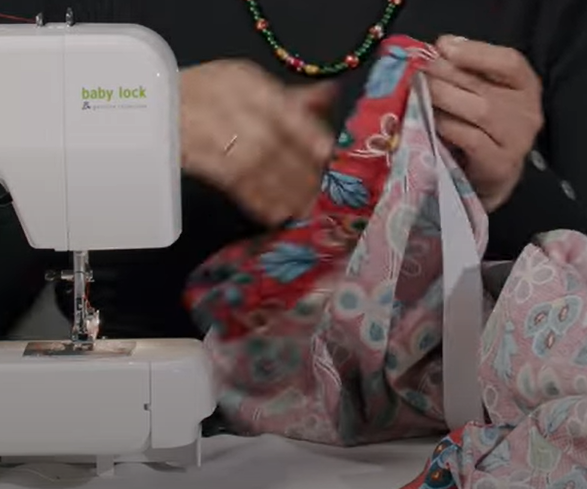
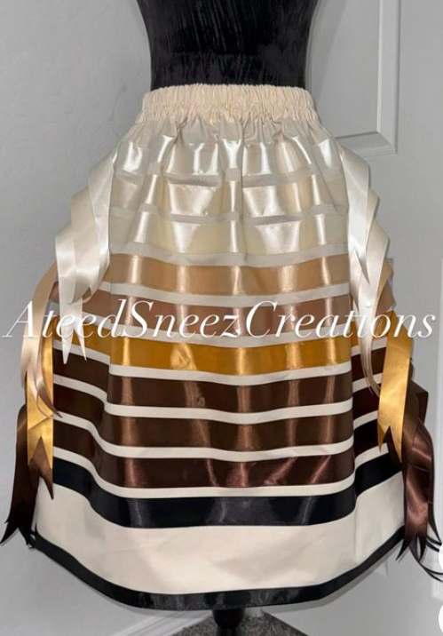

Hello
Let's learn how to make a ribbon skirt from scratch. A ribbon is used by native american women as casual or formal wear, but it encouraged that anyone can wear a ribbon skirt. Especially one handcrafted by themselves and they respect the fashion. Highly encorage you to get creative with your design after you make your first ribbon skirt.
Materials
All materials can be founded at walmart, arts-n-craft stores and highly recommed native american craft material stores. You choose what you want as the base of your skirt and color of ribbon. Can even get lace to put over or under the skirt and accesories.
- Sewing machine/Kit
- 2.5 meter of Ribbons
- Skirt material
- Elmer Glue
- Measurment Tape
- Lace(optional)
- Threading
- Scissors
- Elastic Band
- Pencil
Instructions
Step 1
Get Your Measurment
Take the tape measurment, get your waist measurment and measure how long you want your skirt; add an extra 2 inch to waist. Record your measurments onto a stickynote.
Step 2.1
Fabric
Place your fabric on a flat surface. Using the measurment tape and your recorded measurments, mark down on your fabric the measurments of your waist and desired length using the pencil.
Step 2.2
Fabric Stensil
Your fabric should look like the stencil in this photo and proceed to use the scissor following your marks.
Step 3
Ribbons
After cutting out your design. Get your ribbons ready and place them on the outside of your skirt. I like to use the elmer glue to keep the ribbons in place. Here's the choice, you can place the ribbon evenly cross the skirt or make a pattern.
Step 4
Sewing
Sew the ribbons using your matching threads onto the fabric using any stitch style of your choice.
Step 5
Sewing Fabric
After sewing your ribbons, place the inside of the skirt out. Sew the long edge sides of your fabric, leaving the waist-top and bottom open. Cross hem to get rid of extra material.
Step 6
Waist
Fold the Waist inwards 1.5 inch, than sew and leaving the side open. In the open space, put in the elastic band, matching your recorded waist measurment and sew it shut.
Step 7
Ribbon Skirt
Turn the skirt inside out and try it on